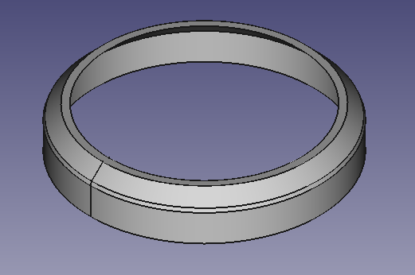
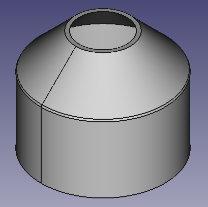

Forums » Discussion »
CAD Unit Tests
Added by Jeremy Wright almost 7 years ago
I changed the CAD unit test so that it's skipped if the tests are being run with a version of Python newer than 2.7.x.
I'll clean that code up a little and then flesh out the actual tests of the geometry next week.
Replies (10)
RE: CAD Unit Tests - Added by Jeremy Wright almost 7 years ago
I started changing the CAD unit tests to be dataset driven like the math tests are. However, this highlighted an issue that we need to talk through.
The CAD tests are complaining that I'm using different unit registries, and I noticed that the math test has the same issue although no conversions are being done so the error isn't raised. I think I remember J saying that it's a requirement of Pint that you use the same units registry all the way through your code.
So, I'm thinking that we need to adjust our code so that a single Pint units registry can be passed around. Any classes/functions that need to work with units would need to have a units registry passed in. For the unit tests, that registry could potentially live in the dataset class.
Thoughts?
RE: CAD Unit Tests - Added by Christopher Sigman almost 7 years ago
We can just create a singleton wrapper around the units registry. That way all we'd have to do is change our import and maybe the call to load it, and not have to pass it around.
RE: CAD Unit Tests - Added by Jeremy Wright almost 7 years ago
I wanted to do a sanity check of the test dataset chambers before I started adding the automated checks. All of them are a variation of this shape, which doesn't seem right.

I stepped back and tried the original Hello World Chamber dimensions and it looks the same as it did before.
dataset_1_chamber.png (18.5 kB)
{kind=link}
RE: CAD Unit Tests - Added by Jeremy Wright almost 7 years ago
That's dataset 1 by the way. I suspect that it's an issue with converting between inches and mm, which are FreeCAD's native units.
I've run out of time for now, but will check that theory out later unless this chamber somehow looks spot-on.
RE: CAD Unit Tests - Added by Jeremy Wright almost 7 years ago
Looks like you're supposed to be able to change units in the newer versions, but it seems like we hit a snag with Shepard when trying to do that. I'll test it out.
RE: CAD Unit Tests - Added by Jeremy Wright almost 7 years ago
I tried allowing all the variables to stay in their native units (inches), and the proportions stay the same.
RE: CAD Unit Tests - Added by Jeremy Wright almost 7 years ago
This isn't going to be straightened out by the stand up tomorrow. The PressureVessel class is giving back a large ro, which I think is what's making the tapered opening look too large. Troubleshooting this has also highlighted a couple of issues with the geometry.
1. The ro when measured on the model is only within about 10% of what the PressureVessel class gives, and ri is almost exact. Our math for figuring out how to draw the profiles before revolving probably has a flaw in it.
2. Probably related to #1, some of the test cases lead to bad geometry when the solid is revolved. I haven't looked into it too closely, but it looks like self-intersecting geometry on first glance.
RE: CAD Unit Tests - Added by Jeremy Wright almost 7 years ago
Ok, so after some digging I figured out that the chamber just looks wrong, but is fine. It's the total length of the chamber not being long enough that makes it look that way. If I increase the length of the chamber I get a better looking result.

I also figured out that I was just doing the math wrong on the ri and ro of the model. It matches the numbers given by the tests.
Is there a way we can objectively (and automatically) choose the total chamber length?
Chamber_with_Proper_Length.png (20.4 kB)
{kind=link}
RE: CAD Unit Tests - Added by Jeremy Wright almost 7 years ago
I'd also like to talk tonight at the #EngineerSpeak Hangout about encoding other things like "expected volume" into the test case datasets so that I can check some extra aspects of the models.
(1-10/10)